WP-15 · issue #23 · PR #84
Throwaway mockups of the home hero, one per direction in ADR-023, with the placeholder lines from report section 2A, the eight proof pillars and the agent shown at rest. Pick one and the other two get deleted; the chosen tokens and fonts move into packages/ui in WP-16. All six variants pass axe (WCAG 2.2 AA) in light and dark, with contrast checked on every text node. The header keeps the default fonts in all three; only its colors follow the direction.
Option 5 chosen · ADR-045
The direction picked: glass cards over a soft aurora, with the agent as a dark terminal card as large as the hero and right next to it, framed by a glowing accent, with the pillar strip right below. On phones the terminal comes right after the hero.
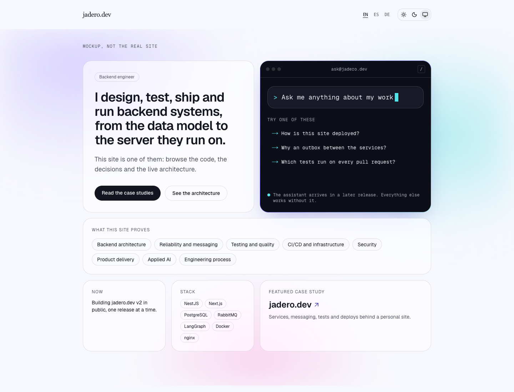
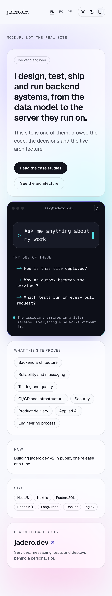
Option 4 superseded
Your pick after the first round: Direction 2's serif headline, grid and terracotta accent, with Direction 1's full prompt card (input, suggested questions, resting note) beside the lead.
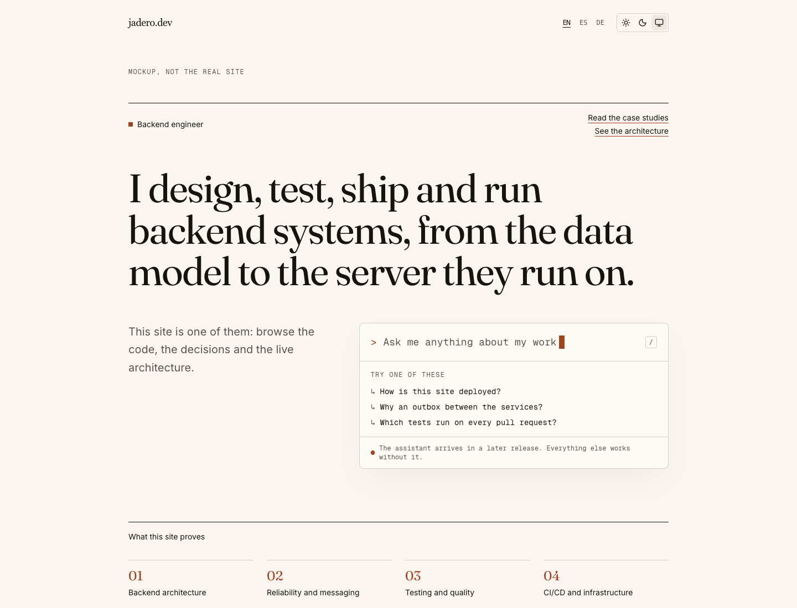
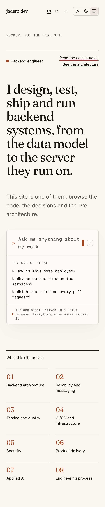
Direction 1
Geist with Geist Mono for labels and the prompt. Warm paper or near-black, one phosphor green accent, a faint dot grid. The command-palette prompt is the hero.
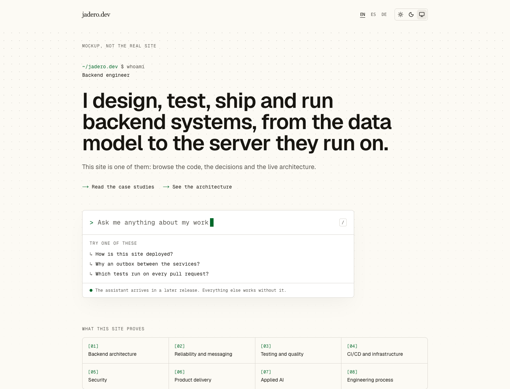
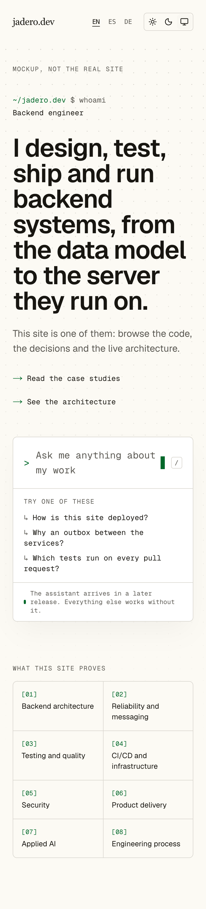
Direction 2
Fraunces headline, Inter body, a 12-column grid, one muted terracotta accent. Direction 1's prompt sits beside the lead as the one signature element, which is what D-23 asks this WP to confirm. Pure Direction 2, with the agent in a side panel opened from the hero, is not drawn.
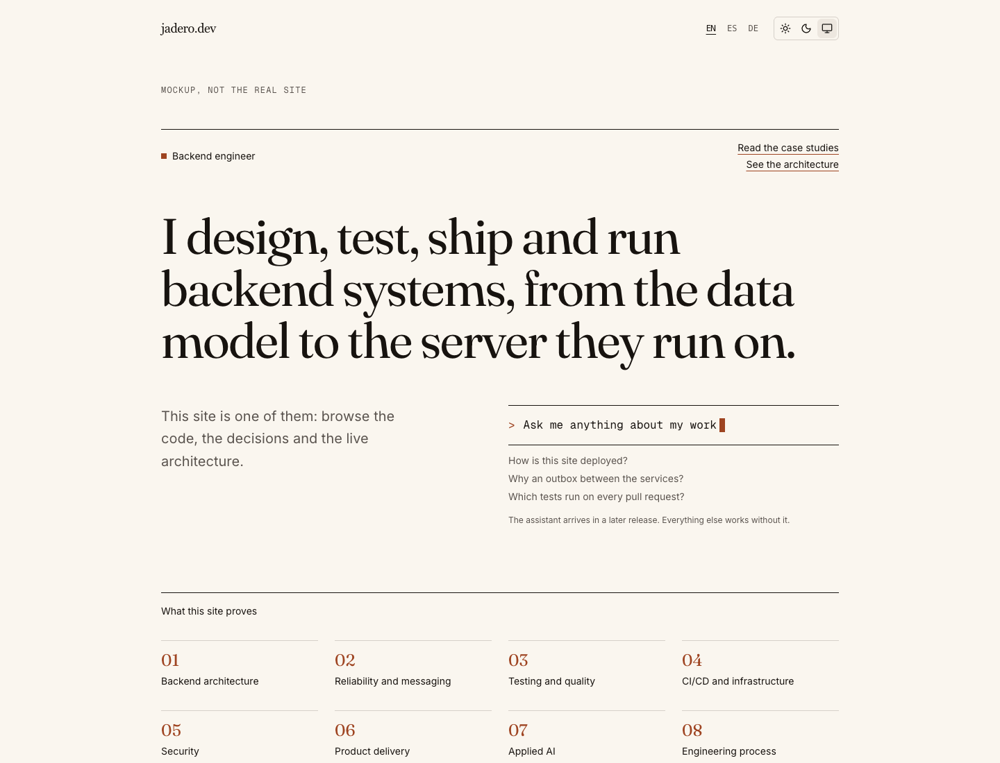
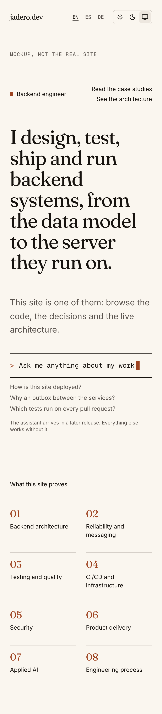
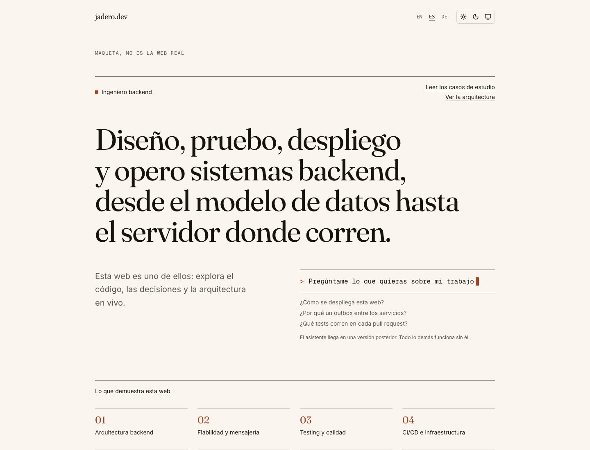
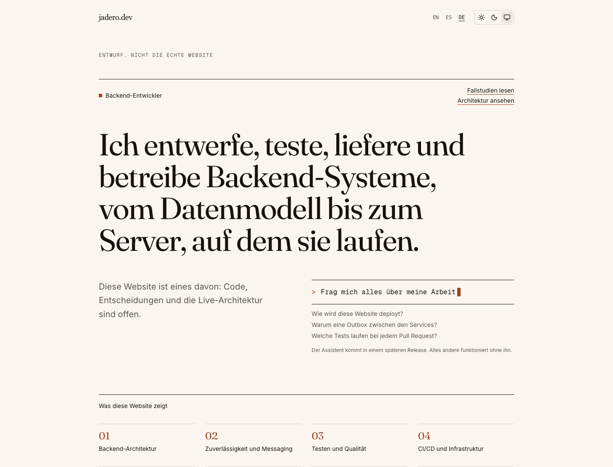
Direction 3
Glass cards over a soft aurora: hero, now, stack, the agent, a featured case study and the pillars. Large radii and a hover lift that only runs when motion is allowed. ADR-023 describes the aurora for dark mode; the light version is an addition.
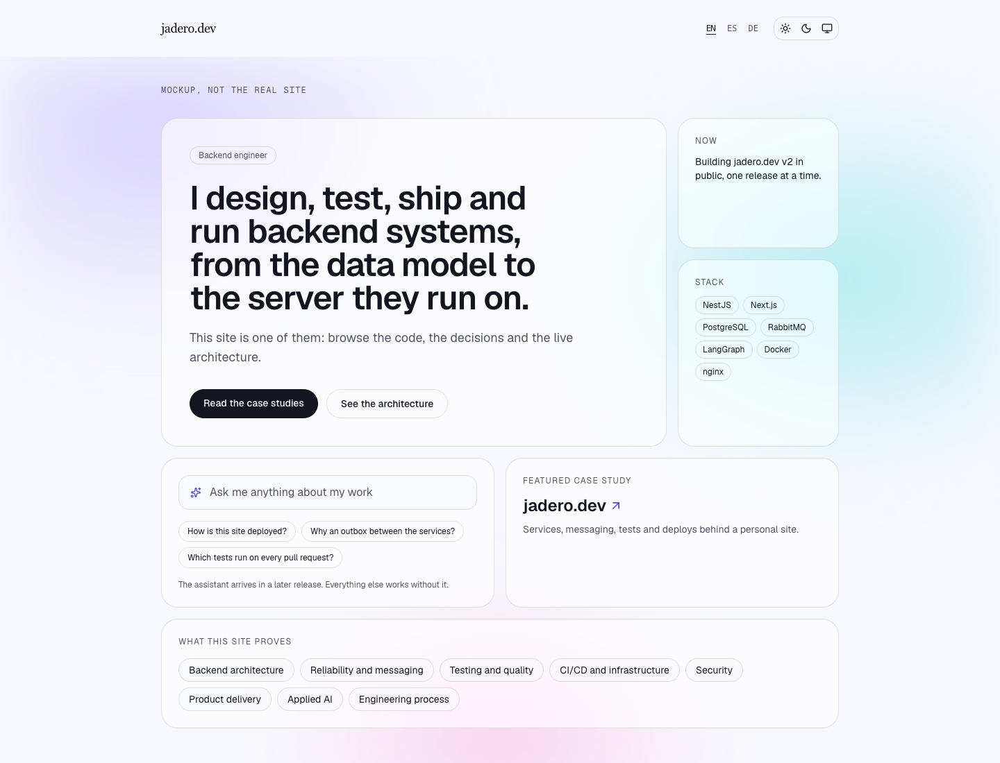
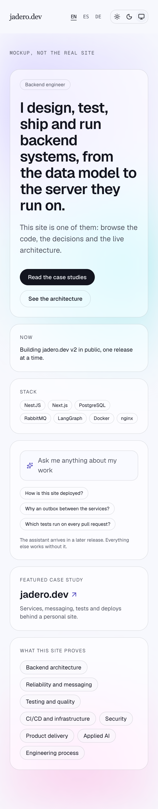